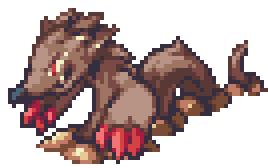
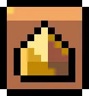
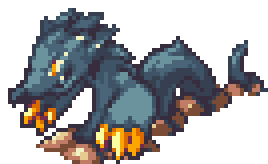
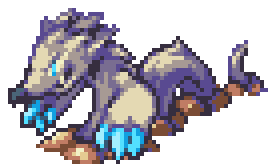

| ← #033 Moffel | #034 Digmow | #035 ??? → |
|---|
| Normal Form | Corodex Description | Type |
|---|---|---|
|  | Digmow build intricate tunnel systems deep under ground, where they spend most of the lives. |  |
| Potent Form | Locations Data | Evolution Line |
|  | - Evolve Moffel. | - Moffel - Digmow (Level 17) - ??? (Level ???) |
| Perfect Form | Traits | |
|  | - Escapist (35/70) - Lucky (35/70) |
| Stats | |
|---|---|
| HP | 66 |
| Attack | 48 |
| Defense | 28 |
| Sp. Attack | 46 |
| Sp. Defense | 26 |
| Speed | 31 |
| Skill set | |
|---|---|
| Level 1 | Scratch |
| Level 4 | Coin Snatch |
| Level 7 | Sandball |
| Level 11 | Tail Spin |
| Level 14 | Constrict |
| Level 17 | Boulder Barrage |
| Level 21 | Double Slash |